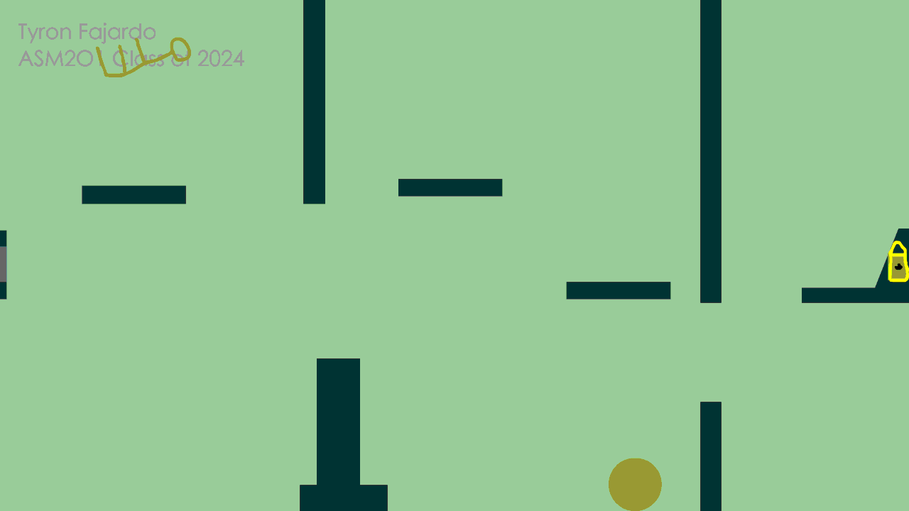

Tyron Fajardo
View My WorkGame Development Student | Aspiring UI Designer
Aspiring UI Designer focused on creating intuitive and engaging player experiences
Game Development Student | Aspiring UI Designer
Aspiring UI Designer focused on creating intuitive and engaging player experiences
I’m a game development student with a strong interest in gameplay systems and UI design. I enjoy solving problems through code while also focusing on how players interact with what I create. My goal is to design intuitive systems that feel natural and engaging to the player.
Outside of development, I enjoy exploring games and understanding how their systems and interfaces work.
Developed a movement and pathfinding system using Dijkstra’s algorithm.
Created a combat system using object-oriented programming principles.
Designed structured environments using tile-based systems to support gameplay readability.
Unity, Unreal Engine, C#, C++, UI Design
Image would be here but I dont have one yet(Zombie game)

This is a project I created during high school that I am proud of. It represents my early interest in game development and design.

Email: tyronjf44@gmail.com
GitHub